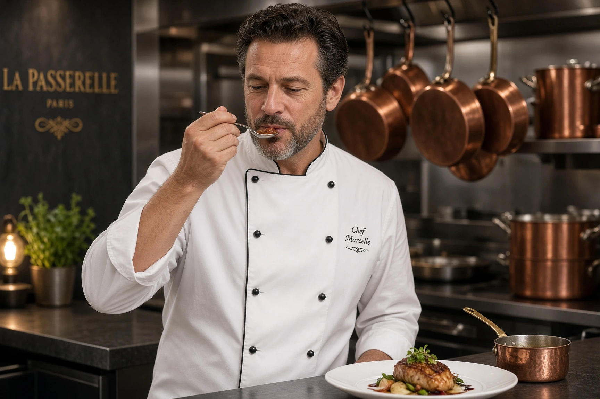
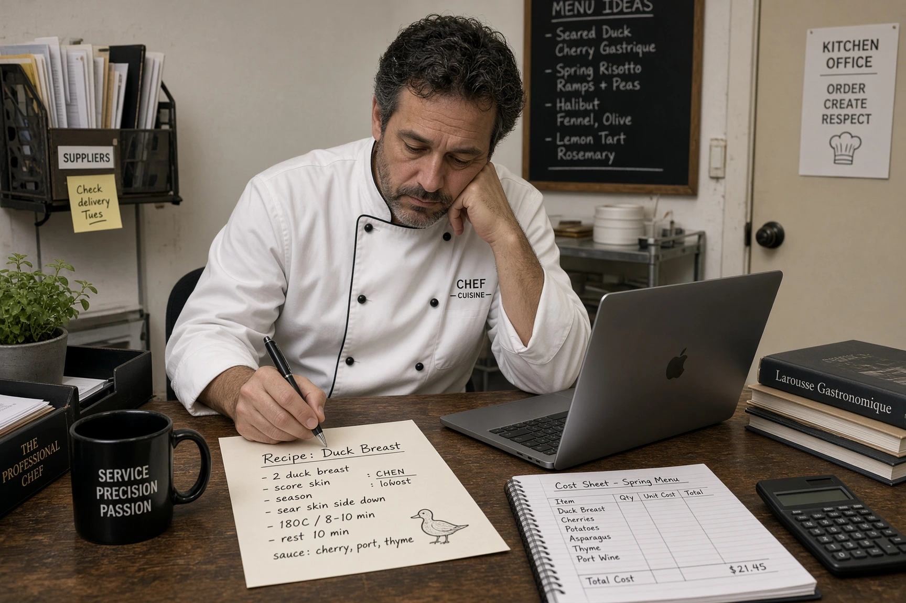

Salaire d'un chef de cuisine en 2026 : brut, net, statut cadre et grille HCR
Le chef de cuisine dirige la brigade, conçoit la carte, gère les achats, le food cost et l'hygiène. C'est le poste le plus variable de la cuisine en termes de salaire : son minimum conventionnel va de 2 508 € brut en 39h (niveau IV) à 4 897 € (niveau V/3), et le marché paie souvent bien au-delà. Voici les minima de l'avenant n°36, la question du statut cadre, le forfait jours et les salaires réellement pratiqués.

Combien gagne un chef de cuisine en 2026 ?
Le chef de cuisine se situe entre le niveau IV (agent de maîtrise) et le niveau V (cadre) de la grille HCR, selon la taille de l'établissement et l'étendue de ses responsabilités.
| Niveau / échelon | Taux horaire brut | Brut mensuel 35h | Brut mensuel 39h | Net estimé 39h |
|---|---|---|---|---|
| IV/1 | 14,69 € | 2 228 € | 2 508 € | ≈ 1 931 € |
| IV/2 | 15,07 € | 2 286 € | 2 573 € | ≈ 1 981 € |
| IV/3 | 15,71 € | 2 383 € | 2 682 € | ≈ 2 065 € |
| V/1 | 18,80 € | 2 851 € | 3 210 € | ≈ 2 472 € |
| V/2 | 22,22 € | 3 370 € | 3 794 € | ≈ 2 921 € |
| V/3 | 28,68 € | 4 350 € | 4 897 € | ≈ 3 770 € |
Minima conventionnels de l'avenant n°36 à la convention collective HCR (IDCC 1979), applicable depuis le 1er novembre 2026. Base 35h = 151,67 h × taux ; base 39h = 151,67 h × taux + 17,33 h × taux × 1,10 (heures 36 à 39 majorées de 10 %). Net estimé = brut × 0,77, à titre indicatif. Hors avantage en nature repas, primes et heures au-delà de 39h.
Cadre ou agent de maîtrise : quel statut pour un chef de cuisine ?
Contrairement à une idée reçue, le chef de cuisine n'est pas obligatoirement cadre. Dans la grille HCR, les niveaux I à IV relèvent des employés et agents de maîtrise, et seul le niveau V correspond au statut cadre. Le classement suit les fonctions réellement exercées :
- Niveau IV (agent de maîtrise) : chef d'une petite brigade, qui cuisine lui-même au quotidien, sans réelle autonomie sur la gestion ou les achats.
- Niveau V (cadre) : chef qui dirige une brigade structurée, conçoit la carte, gère les achats, le budget et le recrutement avec une large autonomie ; chef exécutif d'un groupe.

Le forfait jours pour un chef de cuisine cadre
La convention HCR permet de conclure une convention de forfait annuel en jours avec un cadre autonome de niveau V. Ce dispositif, fréquent pour les chefs de cuisine, remplace le décompte des heures par un nombre de jours travaillés :
- plafond de 218 jours travaillés par an ;
- convention individuelle de forfait écrite et signée ;
- rémunération au moins égale au minimum conventionnel ;
- suivi régulier de la charge de travail et respect du droit à la déconnexion, avec un entretien annuel.
Si ces conditions ne sont pas respectées, le forfait peut être remis en cause et le salarié peut réclamer le paiement de ses heures supplémentaires. Faites valider la mise en place par votre expert-comptable ou un juriste.
Le salaire réel d'un chef de cuisine : Paris et régions
Le minimum conventionnel d'un chef cadre (V/1) représente 3 210 € brut par mois en 39h, soit environ 38 500 € brut par an. Sur le marché, les salaires sont nettement supérieurs pour les postes à responsabilité :
| Chef de cuisine — restauration traditionnelle | Salaire fixe annuel brut |
|---|---|
| Île-de-France — bas de fourchette | 45 000 € |
| Île-de-France — moyenne | 52 500 € |
| Île-de-France — haut de fourchette | 60 000 € |
| Régions | 5 à 20 % de moins selon la région |
Donnée de marché : étude de rémunération du cabinet Michael Page (restauration traditionnelle, chef de cuisine). Elle porte sur des postes recrutés par cabinet et n'est pas représentative de tous les établissements. Les chefs de restaurants étoilés, de palaces et les chefs exécutifs de groupes peuvent être rémunérés bien au-delà.
Notre modèle de planning gratuit, compatible convention HCR, vous aide à maîtriser les heures et la masse salariale de votre brigade.
Accéder au planning →Parcours et évolution d'un chef de cuisine
Le chef de cuisine arrive en général après une dizaine d'années de brigade : commis, chef de partie, puis second de cuisine. Au-delà, les évolutions possibles sont chef exécutif (plusieurs établissements), directeur de la restauration en hôtellerie, ou l'ouverture de son propre restaurant.
Vue d'ensemble de la progression dans notre grille des salaires cuisiniers.
Questions fréquentes : salaire chef de cuisine
Combien gagne un chef de cuisine en 2026 ?
Au minimum conventionnel (avenant n°36, 1er novembre 2026), un chef de cuisine cadre (niveau V) gagne entre 3 210 € et 4 897 € brut par mois en 39h. Sur le marché, les postes de chef en restauration traditionnelle en Île-de-France sont rémunérés autour de 45 000 à 60 000 € brut fixe par an selon Michael Page, 5 à 20 % de moins en régions.
Un chef de cuisine est-il obligatoirement cadre ?
Non. Dans la grille HCR, le statut cadre correspond au niveau V. Un chef qui dirige une petite brigade sans autonomie de gestion peut être classé au niveau IV, avec le statut d'agent de maîtrise. Le classement dépend des fonctions réellement exercées.
Un chef de cuisine peut-il être au forfait jours ?
Oui, s'il est cadre autonome de niveau V. La convention de forfait doit être écrite, plafonnée à 218 jours par an, et l'employeur doit suivre la charge de travail. À défaut, le forfait peut être remis en cause et les heures supplémentaires réclamées.
Quel est le salaire net d'un chef de cuisine ?
Au minimum conventionnel en 39h, un chef de cuisine cadre touche environ 2 472 € net (V/1) à 3 770 € net (V/3). Pour un cadre, les cotisations sont un peu plus élevées que pour un employé : le net réel peut être légèrement inférieur à cette estimation.
Quelle différence de salaire entre second et chef de cuisine ?
Au minimum conventionnel en 39h, un second de cuisine en IV/3 touche 2 682 € brut, contre 3 210 € pour un chef de cuisine cadre en V/1. Sur le marché, l'écart est généralement beaucoup plus important.